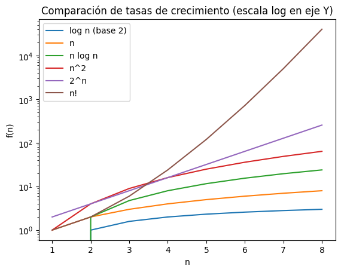
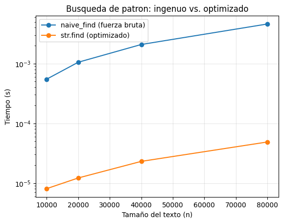
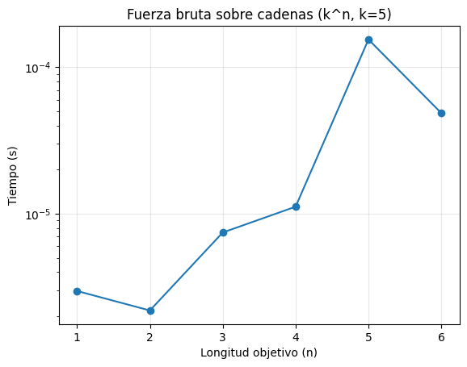
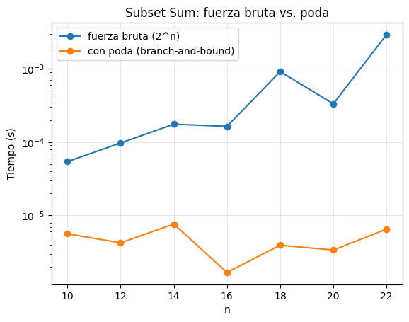

Fuerza Bruta y Complejidad Computacional#
Propósito: comprender, desde la teoría y la práctica, qué son los algoritmos de fuerza bruta, cómo se analizan en tiempo y espacio, y cómo se relacionan con la complejidad computacional (clases P y NP), con experimentos reproducibles en Python.
Objetivos#
Definir y caracterizar el enfoque de fuerza bruta y sus variantes (enumeración exhaustiva, generate-and-test, búsqueda ciega).
Repasar la notación asintótica (O, Θ, Ω), los casos peor/mejor/promedio, y las clases P / NP.
Explorar la explosión combinatoria con ejemplos clásicos: búsqueda lineal, ataque por diccionario, búsqueda de patrón, subset-sum y TSP.
Medir tiempos empíricamente y visualizar tasas de crecimiento (log, lineal, cuadrática, exponencial, factorial).
Comparar fuerza bruta pura contra una primera poda (branch-and-bound), como puente hacia el backtracking.
Discutir cuándo un método de fuerza bruta es aceptable, y qué alternativas existen.
📎 Material de apoyo (diapositivas): Algoritmos de Fuerza Bruta — Fundamentos, Análisis y Aplicaciones (PDF)
1. ¿Qué es un algoritmo de fuerza bruta?#
Un algoritmo de fuerza bruta intenta resolver un problema probando sistemáticamente todas las posibilidades o construyendo todas las soluciones candidatas y verificándolas con un test. Es directo, fácil de implementar y correcto si explora el espacio completo, pero suele ser ineficiente cuando el número de combinaciones crece rápidamente.
Rasgos clave#
Enumeración exhaustiva: lista o genera todas las configuraciones posibles.
Generate & Test: para cada candidato, evalúa si cumple la condición.
Ceguera: carece de conocimiento específico del problema que guíe la búsqueda (a diferencia de heurísticas, poda o programación dinámica).
Complejidad alta: a menudo exponencial o factorial en el tamaño de la entrada.
Ventajas: simplicidad, facilidad de verificar correctitud, útil como línea base o cuando el espacio es pequeño (n ≤ 20).
Desventajas: escala muy mal; puede ser inviable incluso para entradas moderadas.
Regla mental: si el problema requiere probar todas las combinaciones y no hay estructura que aprovechar, probablemente sea fuerza bruta.
2. Complejidad computacional en contexto#
2.1 Modelo de costo#
Operación básica: asumimos costo constante para acceso a arreglo, comparaciones simples, suma/resta, etc.
Abstracciones: ignoramos constantes y detalles de hardware para enfocarnos en cómo crece el tiempo/espacio con el tamaño de entrada
n.
2.2 Notación asintótica#
O(f(n)) (cota superior): el algoritmo no tarda más que una constante por
f(n)paransuficientemente grande.Ω(f(n)) (cota inferior): el algoritmo tarda al menos una constante por
f(n).Θ(f(n)) (cota ajustada): acotado superior e inferior por
f(n).
2.3 Casos de análisis#
Peor caso: garantiza rendimiento en el escenario más desfavorable.
Mejor caso: útil para entender límites inferiores, rara vez suficiente por sí solo.
Caso promedio: requiere un modelo probabilístico de entradas.
2.4 Clases de complejidad (visión de alto nivel)#
P: problemas resolubles en tiempo polinomial (≈ “eficientes”).
NP: soluciones verificables en tiempo polinomial (no necesariamente encontrables rápido).
NP-completo: los problemas más “difíciles” de NP; si resuelves uno en P, entonces P = NP.
Exponencial / Factorial: tiempos del tipo
c^non!, típicos de fuerza bruta pura.
# Utilidades compartidas para medir y graficar tiempos (se usan en todos los ejemplos de este notebook)
import time
from typing import Callable, Tuple, Any
def timeit(f: Callable, *args, **kwargs) -> Tuple[float, Any]:
"""Ejecuta f(*args, **kwargs) y devuelve (tiempo_en_segundos, resultado)."""
t0 = time.perf_counter()
out = f(*args, **kwargs)
t1 = time.perf_counter()
return (t1 - t0), out
def plot_growth(x, ys, labels=None, x_label="n", y_label="Tiempo (s)", title="Escalado empírico", logy=True):
"""Grafica una o varias series (ys puede ser una lista de listas) contra x."""
import matplotlib.pyplot as plt
plt.figure()
if isinstance(ys[0], (list, tuple)):
for serie, label in zip(ys, labels or [None] * len(ys)):
plt.plot(x, serie, marker="o", label=label)
if labels:
plt.legend()
else:
plt.plot(x, ys, marker="o")
plt.xlabel(x_label)
plt.ylabel(y_label)
plt.title(title)
if logy:
plt.yscale("log")
plt.grid(True, alpha=0.3)
plt.show()
3. ¿Cómo crecen los tiempos?#
Comparamos funciones típicas de complejidad: log n, n, n log n, n^2, 2^n, n!. Observa cómo las exponenciales/factoriales dominan rápidamente.
import math
import numpy as np
import matplotlib.pyplot as plt
ns = np.arange(1, 9) # n pequeño para que n! no desborde
logn = np.log2(ns)
n = ns
nlogn = ns * np.log2(ns)
n2 = ns**2
two_n = 2**ns
fact = np.array([math.factorial(int(k)) for k in ns])
plt.figure()
plt.plot(ns, logn, label='log n (base 2)')
plt.plot(ns, n, label='n')
plt.plot(ns, nlogn, label='n log n')
plt.plot(ns, n2, label='n^2')
plt.plot(ns, two_n, label='2^n')
plt.plot(ns, fact, label='n!')
plt.yscale('log')
plt.xlabel('n')
plt.ylabel('f(n)')
plt.title('Comparación de tasas de crecimiento (escala log en eje Y)')
plt.legend()
plt.show()

4. Patrones y familias de fuerza bruta#
Búsqueda lineal (secuencial) sobre una lista: prueba cada elemento hasta encontrar la coincidencia.
Θ(n).Enumeración de combinaciones/permutaciones con
itertools: tamaño del espacio ≈C(n,k)on!.Generate-and-test: genera candidatos y valida con un predicado.
Búsqueda ciega en grafos (BFS/DFS sin heurística específica). Nota: BFS/DFS no son “fuerza bruta” per se, pero si exploran exhaustivamente sin poda, se comportan como tal.
Backtracking sin poda ≈ fuerza bruta; con poda ya introduce inteligencia (no es “pura”) — lo verás en la siguiente sección de esta unidad.
5. Ejemplo 1 — Búsqueda lineal vs. binaria#
Lineal (fuerza bruta): recorre todos los elementos hasta hallar el objetivo.
Θ(n)en peor caso.Binaria (optimizada): requiere datos ordenados; divide y vencerás.
Θ(log n).
def linear_search(arr, x):
for i, v in enumerate(arr):
if v == x:
return i
return -1
def binary_search(arr, x):
lo, hi = 0, len(arr) - 1
while lo <= hi:
mid = (lo + hi) // 2
if arr[mid] == x:
return mid
if arr[mid] < x:
lo = mid + 1
else:
hi = mid - 1
return -1
for n in [10_000, 100_000, 500_000]:
arr = list(range(n))
x = n - 1 # peor caso para la lineal (el ultimo elemento)
t_lineal, _ = timeit(linear_search, arr, x)
t_binaria, _ = timeit(binary_search, arr, x)
print(f"n={n:>7} | lineal ~{t_lineal:.6f}s | binaria ~{t_binaria:.6f}s")
n= 10000 | lineal ~0.000327s | binaria ~0.000007s
n= 100000 | lineal ~0.002168s | binaria ~0.000007s
n= 500000 | lineal ~0.014696s | binaria ~0.000015s
6. Ejemplo 2 — Búsqueda de patrón: método ingenuo vs. optimizado#
El método naive compara el patrón P (longitud m) en cada posición del texto T (longitud n), con salida temprana en cuanto un carácter no coincide ⇒ O(n·m) en el peor caso. Lo comparamos contra str.find (que internamente usa un algoritmo más eficiente).
import random, string
def naive_find(text: str, pattern: str) -> int:
n, m = len(text), len(pattern)
if m == 0:
return 0
for i in range(n - m + 1):
j = 0
while j < m and text[i + j] == pattern[j]:
j += 1
if j == m:
return i
return -1
def bench_pattern(n_text: int, n_pat: int):
text = "".join(random.choice(string.ascii_lowercase) for _ in range(n_text))
pattern = "".join(random.choice(string.ascii_lowercase) for _ in range(n_pat))
t_naive, _ = timeit(naive_find, text, pattern)
t_builtin, _ = timeit(str.find, text, pattern)
return t_naive, t_builtin
sizes = [10_000, 20_000, 40_000, 80_000]
naive_t, builtin_t = [], []
for s in sizes:
t_na, t_bi = bench_pattern(s, 5)
naive_t.append(t_na)
builtin_t.append(t_bi)
print(f"n={s:>6} | naive={t_na:.6f}s str.find={t_bi:.6f}s")
plot_growth(sizes, [naive_t, builtin_t], labels=["naive_find (fuerza bruta)", "str.find (optimizado)"],
x_label="Tamaño del texto (n)", title="Busqueda de patron: ingenuo vs. optimizado")
n= 10000 | naive=0.000549s str.find=0.000008s
n= 20000 | naive=0.001053s str.find=0.000012s
n= 40000 | naive=0.002088s str.find=0.000023s
n= 80000 | naive=0.004602s str.find=0.000049s

7. Ejemplo 3 — Explosión combinatoria: ataque por diccionario#
Dado un alfabeto de tamaño k y una longitud objetivo n, existen k^n cadenas posibles. Probamos todas las combinaciones hasta encontrar el objetivo, y medimos cómo crece el tiempo con n.
from itertools import product
def brute_force_match(target: str, alphabet: str):
"""Prueba cadenas en orden lexicografico. Devuelve (intentos, cadena_encontrada)."""
n = len(target)
attempts = 0
for tup in product(alphabet, repeat=n):
attempts += 1
cand = "".join(tup)
if cand == target:
return attempts, cand
return attempts, ""
# Prueba rapida
alphabet = "abcd"
target = "cab"
dt, (attempts, encontrada) = timeit(brute_force_match, target, alphabet)
print(f"target='{target}' -> encontrada='{encontrada}', intentos={attempts}, tiempo={dt:.6f}s")
# Crecimiento con la longitud n (alfabeto fijo de 5 letras: k=5)
def runner_len(n: int) -> float:
alpha = "abcde"
obj = "".join(random.choice(alpha) for _ in range(n))
dt, _ = timeit(brute_force_match, obj, alpha)
return dt
lens = list(range(1, 7)) # k^n con k=5: hasta 5^6 = 15625
times = [runner_len(n) for n in lens]
for n, t in zip(lens, times):
print(f"n={n}: {t:.6f}s (espacio de busqueda = 5^{n} = {5**n})")
plot_growth(lens, times, x_label="Longitud objetivo (n)", title="Fuerza bruta sobre cadenas (k^n, k=5)")
target='cab' -> encontrada='cab', intentos=34, tiempo=0.000009s
n=1: 0.000003s (espacio de busqueda = 5^1 = 5)
n=2: 0.000002s (espacio de busqueda = 5^2 = 25)
n=3: 0.000007s (espacio de busqueda = 5^3 = 125)
n=4: 0.000011s (espacio de busqueda = 5^4 = 625)
n=5: 0.000155s (espacio de busqueda = 5^5 = 3125)
n=6: 0.000049s (espacio de busqueda = 5^6 = 15625)

8. Ejemplo 4 — Subset Sum: fuerza bruta vs. una primera poda#
Subset Sum: dado un conjunto de enteros y un objetivo T, ¿existe un subconjunto que sume exactamente T?
Fuerza bruta: prueba las
2^nmáscaras de bits posibles.Con poda (branch-and-bound): si la suma parcial ya supera
T(con números no negativos), se corta esa rama sin seguir explorando — es, en esencia, un backtracking con una condición de poda. Esta comparación es el puente hacia la sección de Backtracking de esta unidad.
def subset_sum_bruteforce(arr, target):
n = len(arr)
for mask in range(1 << n):
s = 0
for i in range(n):
if mask & (1 << i):
s += arr[i]
if s == target:
return True
return False
def subset_sum_bnb(arr, target):
arr_sorted = sorted(arr, reverse=True)
n = len(arr_sorted)
def dfs(i, current):
if current == target:
return True
if current > target: # <- poda: ya nos pasamos, no seguimos por esta rama
return False
if i == n:
return False
if dfs(i + 1, current + arr_sorted[i]):
return True
return dfs(i + 1, current)
return dfs(0, 0)
# Correctitud
arr = [3, 34, 4, 12, 5, 2]
T = 9
print("Fuerza bruta:", subset_sum_bruteforce(arr, T))
print("Con poda :", subset_sum_bnb(arr, T))
Fuerza bruta: True
Con poda : True
def make_instance(n, seed=42):
rnd = random.Random(seed + n)
nums = [rnd.randint(1, 50) for _ in range(n)]
target = sum(nums) // 2
return nums, target
ns = list(range(10, 23, 2)) # 2^22 ya es notable para la fuerza bruta pura
t_brute, t_bnb = [], []
for n in ns:
nums, target = make_instance(n)
dt1, _ = timeit(subset_sum_bruteforce, nums, target)
dt2, _ = timeit(subset_sum_bnb, nums, target)
t_brute.append(dt1)
t_bnb.append(dt2)
print(f"n={n:>2} | fuerza bruta={dt1:.6f}s | con poda={dt2:.6f}s")
plot_growth(ns, [t_brute, t_bnb], labels=["fuerza bruta (2^n)", "con poda (branch-and-bound)"],
x_label="n", title="Subset Sum: fuerza bruta vs. poda")
n=10 | fuerza bruta=0.000054s | con poda=0.000006s
n=12 | fuerza bruta=0.000097s | con poda=0.000004s
n=14 | fuerza bruta=0.000175s | con poda=0.000008s
n=16 | fuerza bruta=0.000164s | con poda=0.000002s
n=18 | fuerza bruta=0.000912s | con poda=0.000004s
n=20 | fuerza bruta=0.000332s | con poda=0.000003s
n=22 | fuerza bruta=0.002909s | con poda=0.000007s

9. Ejemplo 5 — El problema del viajante (TSP) por fuerza bruta#
Para n ciudades, fijando una ciudad de inicio, hay (n-1)! rutas posibles a explorar. Probamos todas para n pequeño y medimos el tiempo — el crecimiento factorial se nota de inmediato.
from itertools import permutations
def tsp_bruteforce(dist):
n = dist.shape[0]
best_cost = float("inf")
best_path = ()
nodes = list(range(1, n)) # fijamos la ciudad 0 como origen
for perm in permutations(nodes):
cost = 0.0
prev = 0
for v in perm:
cost += dist[prev, v]
prev = v
cost += dist[prev, 0] # cerrar el ciclo
if cost < best_cost:
best_cost = cost
best_path = (0,) + perm + (0,)
return best_cost, best_path
def make_tsp(n, seed=7):
rnd = np.random.default_rng(seed + n)
pts = rnd.random((n, 2))
dist = np.sqrt(((pts[:, None, :] - pts[None, :, :]) ** 2).sum(axis=2))
return dist
for n in [6, 7, 8]: # 5!=120, 6!=720, 7!=5040 rutas
D = make_tsp(n)
dt, (cost, path) = timeit(tsp_bruteforce, D)
print(f"n={n} | tiempo={dt:.4f}s | costo={cost:.4f} | ruta={path}")
n=6 | tiempo=0.0001s | costo=3.0154 | ruta=(0, 4, 2, 5, 3, 1, 0)
n=7 | tiempo=0.0006s | costo=1.8777 | ruta=(0, 3, 1, 6, 4, 2, 5, 0)
n=8 | tiempo=0.0048s | costo=2.7345 | ruta=(0, 5, 3, 2, 1, 7, 4, 6, 0)
10. Complejidad espacial, trade-offs y paralelización#
Espacio: la fuerza bruta suele usar poco espacio (se puede generar on-the-fly con iteradores), aunque puede crecer si memorizamos estados.
Tiempo vs. espacio: a veces conviene gastar memoria para evitar repetir trabajo (tabulación, caching) — pero entonces deja de ser fuerza bruta pura.
Paralelización: como cada candidato se evalúa de forma independiente, la fuerza bruta paraleliza bien (CPU/GPU/clúster). Aun así, la explosión combinatoria puede dominar igual.
Heurísticas y poda: podar ramas imposibles o poco prometedoras, branch & bound, búsqueda informada — mejoran lo práctico, pero ya no es fuerza bruta “pura” (así empieza el backtracking).
Aleatoriedad: random restarts, Monte Carlo, Las Vegas — reducen tiempos esperados, sin garantías deterministas de peor caso.
11. ¿Cuándo sí usar fuerza bruta?#
El espacio de búsqueda es pequeño (o está acotado por requisitos de negocio).
Necesitas una línea base para comparar contra optimizaciones más avanzadas.
Requieres soluciones exactas y no hay métodos mejores para tu tamaño de
n.Tienes recursos de cómputo masivos o ventanas de cálculo “offline”.
Forma parte de una solución híbrida (ej. fuerza bruta en la frontera de un algoritmo de divide y vencerás).
Cuándo evitarla: cuando n o el espacio de búsqueda crecen de forma que ningún multiplicador razonable de hardware alcanza (exponencial/factorial).
12. Retos y ejercicios#
Ataque por diccionario: calcula el tiempo esperado de probar
A^Lcombinaciones dadoXintentos por segundo.Más poda en Subset Sum: ordena por valor absoluto y corta ramas cuando la suma parcial ya excede el objetivo (con negativos incluidos).
Naive vs. KMP: implementa Knuth-Morris-Pratt y compáralo con
naive_finden casos adversos (ver las diapositivas para la idea del algoritmo).TSP con
n=9..11: mide el tiempo y graficanvs. tiempo. ¿Qué curva emerge?Paralelización: usa
multiprocessingpara repartir el espacio de búsqueda de subset-sum entre varios procesos.Meet-in-the-middle: guarda las sumas de la mitad del conjunto y compáralas contra la fuerza bruta pura — ¿cuánto mejora?
Apéndice — Notas de implementación en Python#
itertools.product,combinations,permutationsgeneran secuencias sin materializarlas (bueno en memoria).Usa
time.perf_counter()para mediciones finas.Evita imprimir dentro de bucles de medición (afecta los tiempos).
Para reproducibilidad, fija semillas de
random.
Referencias y lecturas sugeridas#
Cormen, Leiserson, Rivest, Stein. Introduction to Algorithms (CLRS) — capítulos de complejidad y problemas NP-completos.
Kleinberg, Tardos. Algorithm Design — secciones sobre brute force y técnicas de diseño.
Sipser. Introduction to the Theory of Computation — clases P y NP.
Skiena. The Algorithm Design Manual — catálogo de problemas y enfoques prácticos.
Garey, Johnson. Computers and Intractability: A Guide to the Theory of NP-Completeness.
Dasgupta, Papadimitriou, Vazirani. Algorithms.